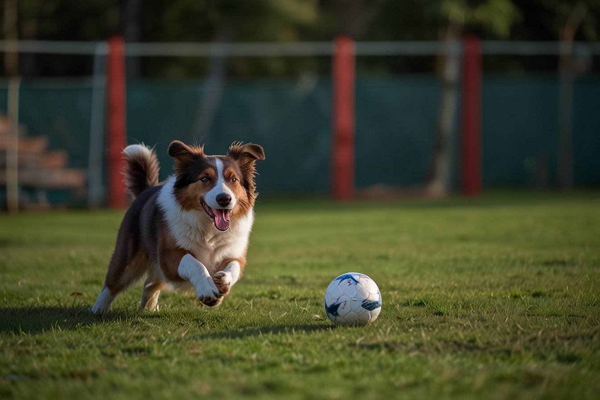

The Australian Shepherd is an intelligent, energetic breed. They excel in various roles such as working dogs and companions.
Aussies are known for their strong work ethic and agility. They come in colors like black, blue merle, red, and red merle.
They are friendly, affectionate, and make great family pets. Regular exercise is a must to keep them happy.

We breed our dogs carefully, ensuring that the parent dogs are healthy and have good temperaments. Our puppies are priced between $1500 and $2500, depending on the color and markings.